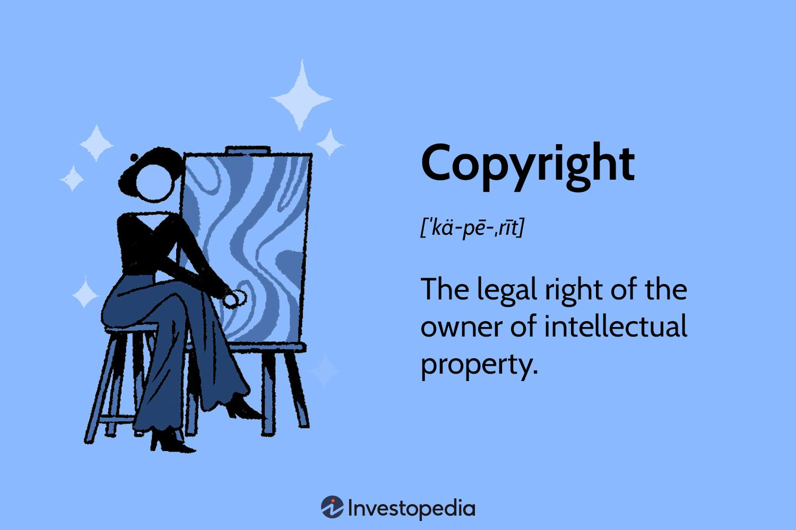
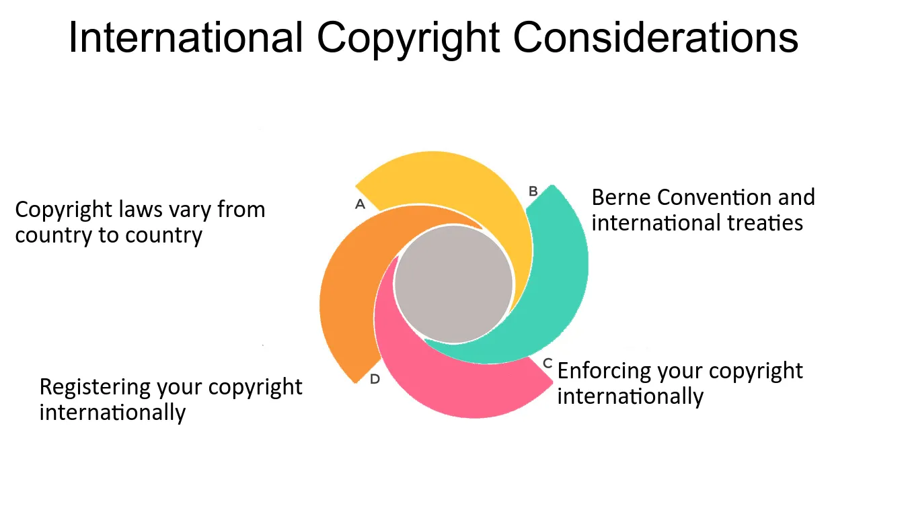

Copyright Law
An in depth look at Copyrights
April 01, 2024 | Jack Burkholder & Alex Elliott
Table Of Contents
- What is Copyright?
- Ownership Of Code
- Open Source Licenses
- Closed Source Licenses
- Fair Use
- How to Protect your code
- Enforcing a Copyright
- International Copyrights
- Updating a Copyright
- Questions
What is Copyright?
Copyright is a legal right that grants creators exclusive control over the use and distribution of their original works.
Copyright doesn't cover facts, ideas, systems, or methods.It covers the specific way they're expressed.
Copyright doesn't protect the idea itself, it protects the final written or artistic work.
In 1983, traditional copyright law was expanded to include machine-readable software, granting them the same copyright status as literary works.
image via investopedia.com
Ownership Of Code
Code is treated as if it is a literary work. Who ever is behind the keyboard owns the code. Unless it is for a company or a contract states another owner.
Think of it like an author. They own their book, unless they sell it off to a company, or they wrote it for a company while employed under them.
An interesting topic right now is who owns AI written code
Currently it is treated as if the user who prompted the code to be written by the AI wrote it themselves.
However if the prompts include copywritted material, the person who owns the copywrite may have a claim to the code.
image via t2informatik.de
Open Source Licenses
Definition: a legal agreement that allows users to access, modify, and distribute a piece of software's source code.
Types:
Permissive Licenses:
- Examples: MIT, BSD, Apache.
- Allows a lot of freedom to use the copyright.
- Minimal Requirements to use.
- Are Compatable with other licenses.
Copyleft Licenses:
- Examples: GPL, LGPL.
- There is a share-alike requirement where the derivitive works must be distributed under the same terms as the original
- They aim to protect the freedom of the software by stopping it from being used.
- They might have compatibility issues with propietary licenses..
image via activestate.com
Closed Source Licenses
Definition: a type of software license that contain non-open source terms and often require payment for use.
Characteristics:
- Restrictive Usage: Limits the software usage to specific purposes or environments.
- No Modification Rights: Users are prohibited from modifying or reverse-engineering the software.
- No Redistribution: Prohibits sharing or distribution of the software to third parties.
- Proprietary Rights: The Copyright holder retains all proprietary rights to the software.
- End User License Agreement (EULA): Typically accompanied by an EULA outlining terms and conditions of use.
- Protection Mechanisms: May include encryption, license keys, or Digital Rights Management(DRM) systems to prevent unauthorized use.
Examples of Closed Source Licenses:
- Proprietary Commercial Licenses: Microsoft EULA for Windows, and others.
- Freeware Licenses: Software available for free but closed source with restrictions.
- Shareware Licenses: Allows try-before-you-buy, often with purchase requirements.
Fair Use
Definition: Some Copyright material can in certain curcumstances be used for non-commercial purposes without permission from the copyright holder.
Key Factors:
- How is it Used?
Whether the use of copyrighted material is transformative, for educational purposes, or commercial in nature. - What type of work is it?
Whether the type of work being used is factual or creative, published or unpublished. - How much does this copyrighted work change the new work as a whole?
How much of the portion of the copyrighted work thats being used and how important is it to the new work. - Whats the effect on the market?
What the impact of the copyright material's potential market or the value of the copyrighted work
Examples: Fair use may include criticism, comment, news reporting, teaching, scholarship, research, and parody. However, each case is evaluated individually based on the specific circumstances.

image via libguides.hacc.edu
How to Protect your code
To protect your code from copyright infringement, make sure to follow these steps:
- Ensure the code is yours and not a direct copy of someone else's
- Use version control systems/repositories like GitHub to track changes and to keep a record of your development.
- Consider having copyright notices on your work that clearly show ownership/usage permissions
- Monitor your code online for infringement and consider taking legal action.
image via stop-source-code-theft.com
Enforcing a Copyright
Enforcing copyrighted web development involves protecting work such as websites, code, and other digital content. Copyright enforcement can include:
- Sending cease and desist notices
- Getting takedowns done against stolen copyright content
- Pursuing legal action against infringers.
Copyright protection is automatically applied when you make a piece of web design, though copyright registration can help enforce your own rights.
image via investopedia.com
International Copyrights
Since copyright laws are different per country, it is important to follow the correct legal actions to protect your web development.
Many countries already have automatic copyright protection for web developments, but some do not and must have different actions taken.
International Copyright Laws are actually made via treaties between countries, and unfortunately, the U.S. does not have treaties with every country.
image via fastercapital.com
Updating a Copyright
Updating a copyright in web devlopment includes extending the protection for the copyrighted material.
Copyrights usually last the entire creator's lifetime as well as a couple more years after death.
Updating copyrights can include:
- Changing the date of expiration
- Changing the owner
- Changing the license/terms of the license
Regularly updating copyrights is a good habit if one would not want their creations to be stolen as it keeps updated legal protection.
image via copyrightalliance.org